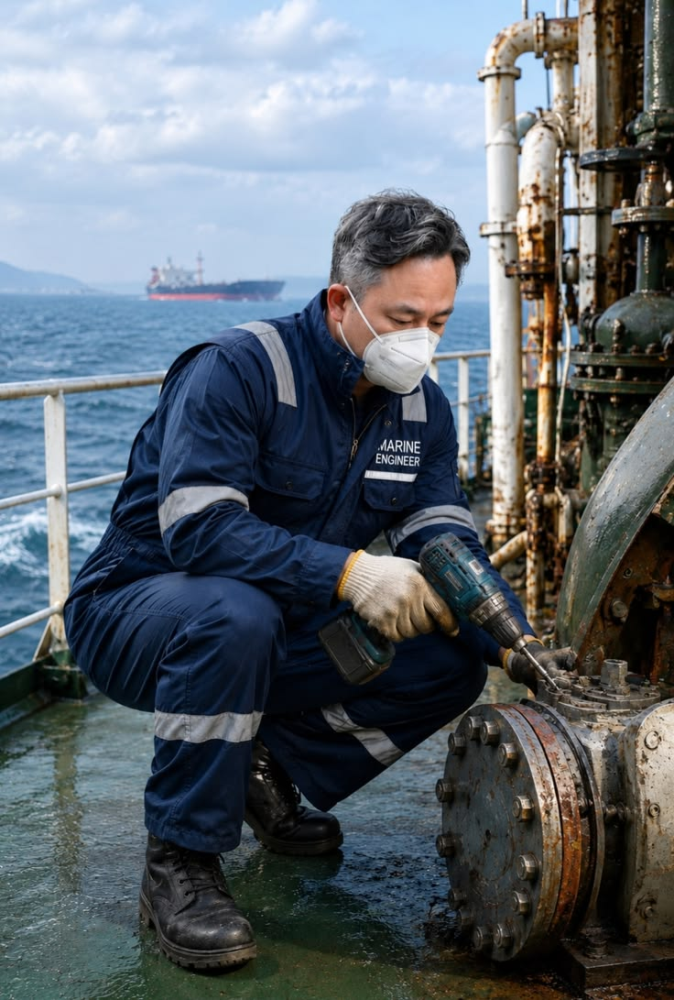
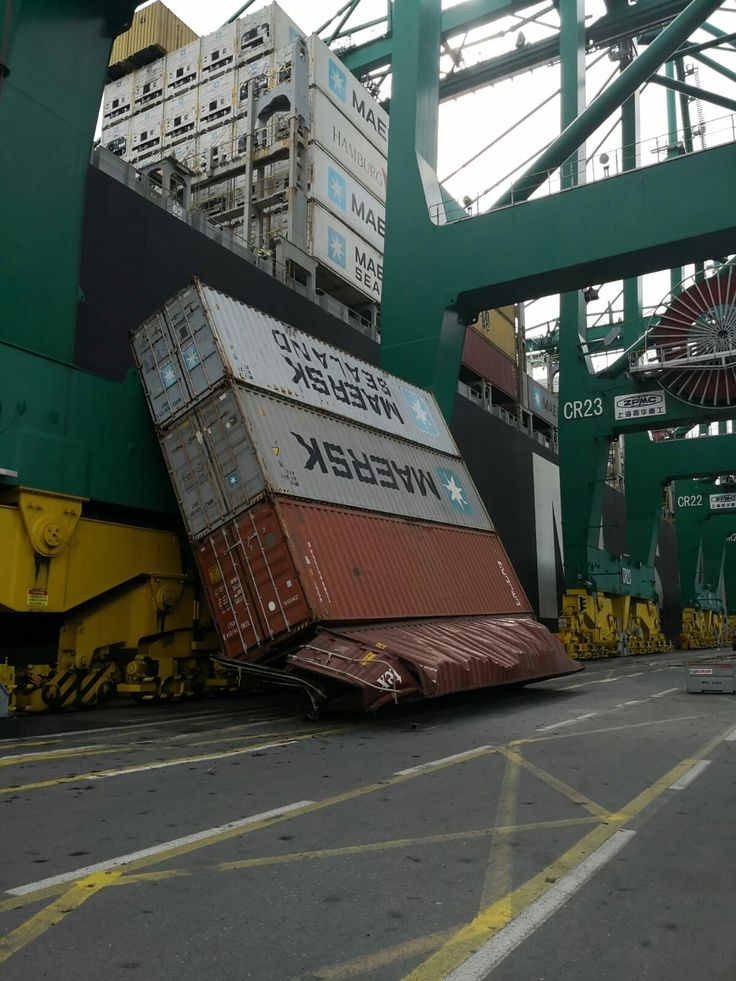

案例 A：集装箱船分段的钢板套料
输入：生产设计系统输出的船体零件、板厚、材质、船段号和零件编码。
处理：套料软件按板厚和材质分组，优先使用库存余料，安排共边切割和坡口方向，生成火焰/等离子设备可读取的NC文件。
输出：切割程序、钢板利用率、余料清单、零件标签和领料任务。后续进入打磨、折弯、拼板和分段装配。
常见断点：设计变更后旧NC文件仍在车间流转，或零件标签编码与MES不一致，导致找件和追溯困难。
国内已能覆盖设计、企业管理、航海电子、港口物流与部分自动化，但多为项目制与单点方案。国外生态更完整，却同样存在数据孤岛、成本与中小船厂适配等问题。本页把「谁」与「缺什么」分开讲透。
本节用于解释申报书中“船舶制造数字化”项目所处的行业环节、技术对象和落地价值。
船舶建造通常先完成总体设计、详细设计和生产设计，再进入钢材预处理、零件下料、成形、拼板、焊接、分段总组和舾装。申报项目聚焦其中的“生产准备”环节，连接设计部门与切割车间：把船舶二维或三维设计数据转成可识别的平面零件、物料清单、钢板套料方案、工艺参数和数控程序。
生产准备的质量会直接影响后续工序。零件识别错误，可能造成错料；套料不合理，会增加钢板浪费；坡口方向或切割顺序错误，会影响焊接和拼装；设计变更没有同步，现场可能继续使用旧程序。这个环节的数字化价值，在于让“设计意图”可靠地传到“设备动作”。
船体外板、甲板、肋板、纵骨、加强筋、舱壁和许多舾装支撑件，最终会展开成钢板上的二维轮廓。它们可能具有复杂曲线边界、圆孔、长圆孔、组合孔、缺口、坡口和严格的安装方向。船厂需要把这些零件放到不同材质和厚度的钢板上，再生成切割机能够执行的路径。
普通钣金套料通常追求材料利用率；船舶套料还要同时考虑分段归属、零件方向、焊接和装配顺序、板材边缘距离、最小间隙、坡口、热影响、吊运和现场标识。因此，船舶专用套料属于几何、工艺、设备和生产计划共同约束的问题。
一张排样图只能说明零件放在钢板的什么位置。船厂真正需要的是一组可执行、可检查、可追溯的数据：使用了哪块钢板、由哪台设备加工、采用什么切割参数、坡口朝向是什么、零件属于哪个分段、程序由哪个版本生成、现场是否完成、切下来的余料还剩多少。
申报项目提出的“可信数字主线”，重点就在于把几何算法、工艺规则、设备接口和生产记录关联起来。可信包含四层含义：数据来源可验证，版本变化可追踪，业务责任可确认，生产结果可回溯。
申报书中的“复杂边界和带内孔零件专用套料算法”，对应船舶零件形状复杂、孔特征多和方向约束强的工程难题；“多目标优化”对应材料利用率、切割效率、热变形和生产节拍不能单独优化的现实；“工艺规则库”对应坡口、割缝、桥接、共边和设备能力的配置；“软硬件协同”对应软件输出必须能够被喷码划线、平面切割、坡口切割和码垛设备可靠执行。
从产业化角度，这类产品通常采用“软件授权 + 实施集成 + 设备联调 + 培训运维 + 版本升级”的模式。大型船厂更适合私有化部署和与现有PLM/MES集成，中小船厂可以从套料、工艺和设备接口等模块开始，逐步扩展到库存、质量和数据分析。
船体 / 生产设计 · 船厂数字化
导航 · 通信 · 监测
CAD · PLM · ERP · MES
船队 · 港口 · 船岸信息化
这一类直接服务船舶设计院、总装船厂和海工企业，覆盖总体设计、船体结构、轮机、电气、管路、舾装、分段划分、生产出图、物料清单和船厂数字化。中国船舶集团相关研究院所、船厂软件部门及专业数字化公司，通常拥有大量国产船型、规范库和现场经验。
能解决的问题：把船东需求转成设计模型，把模型拆成分段、零件和生产图纸，并把设计数据传给采购、工艺和现场。复杂船型、军工项目和大型船厂往往需要定制开发。
优势：熟悉中国船厂的分段建造、托盘管理、外协加工、船级社审查和国产设备；能够根据集团标准改造流程。
限制：产品常带有项目属性，跨船厂复制需要重新配置；不同系统的物料编码、坐标系、版本和接口标准不统一，容易形成新的数据孤岛。
采购时要看：是否有可复用的船舶对象模型、是否支持设计变更追踪、能否输出套料和工艺数据、能否与MES/ERP集成，以及交付团队是否理解真实船厂现场。
这类企业提供雷达、电子海图、AIS、卫星通信、航行数据终端、机舱监控、配电管理、推进控制、报警和综合自动化系统。海兰信、中国船舶集团配套企业、中电科相关单位及船用电气厂商都在不同细分领域提供产品。
产品形态：单台设备、成套船桥、机舱自动化系统、船岸通信平台，以及包含传感器、控制器、软件和调试服务的整体工程包。
优势：设备接近真实船舶运行环境，能够处理实时性、冗余、断网和应急模式；国内项目在中文服务、改造船适配和监管对接方面响应较快。
限制：大型综合自动化、动力定位、电力推进和国际船级社认证需要长期运行案例。不同供应商协议不一致时，船桥、机舱、配电和岸基平台之间仍会出现接口问题。
采购时要看：船级社证书、故障降级策略、备件和生命周期支持、网络安全设计、开放协议能力，以及系统能否在卫星通信中断时保持关键功能。
中望、华天软件、数码大方主要提供CAD、PDM/PLM和工程数据能力；宝信、用友、金蝶、鼎捷、赛意、能科等更多参与ERP、MES、供应链、质量、设备和数据平台项目。
能解决的问题：合同、采购、库存、成本、计划、工单、质量、外协、设备、人员和经营分析。它们适合补齐船厂的经营管理和现场执行层。
船舶化的难点：船厂的“产品”是一艘定制船，物料既有标准件又有项目件；生产对象既有零件、分段、托盘，也有船段、舱室、系统和船级社文件。通用ERP/MES需要理解这些对象之间的关系。
常见落地问题：系统上线前主数据治理不足、车间仍使用Excel、设计变更无法自动触发采购和工单、外协厂没有统一接口、现场网络和终端条件不足。
中远海运科技、港口集团科技公司和船舶数据服务商，主要覆盖船队管理、港口调度、集装箱物流、电子单证、船舶定位、油耗、碳排放和船岸协同。
下游价值：帮助船东掌握船期、靠泊、货物、船员、维修、备件、燃油和排放，并把船舶运行数据连接到港口、货主和监管平台。
当前边界：运营平台通常从交船后的数据开始，设计模型、设备出厂数据和建造质量记录并未完整传入；预测性维护也常受传感器质量、船型差异和故障样本不足限制。
适用客户：拥有多船队、多港口或复杂物流网络的船东和港口集团。小型船东更需要轻量化、低实施成本和快速见效的产品。
国外供应商大致形成五条产品线。第一条是设计与生产：AVEVA、Siemens、Dassault、Cadmatic、SSI和Hexagon；第二条是船舶专业分析与运营：NAPA；第三条是仿真：ANSYS、Simcenter、SIMULIA、Altair及专业CFD；第四条是船上自动化、推进和动力：ABB、Wärtsilä、Kongsberg、Schneider、Honeywell、Mitsubishi Electric和MAN Energy Solutions；第五条是船级社、合规和数据：DNV、ABS、LR、BV等。
国外生态的核心价值：软件、设备、认证、工程咨询、全球服务、数据平台和长期升级通常可以组合成一套解决方案。大型船厂可以从概念设计一直使用到运营，船级社也更容易识别其数据格式和审查流程。
国外产品的适用边界：大型船厂、国际船东、复杂海工和跨国项目更能承受许可证及实施成本；中小船厂、老旧船舶和高度定制的本地项目，往往需要大量配置与第三方集成。
| 领域 | 常见企业 |
|---|---|
| 设计与建造软件 | AVEVA、Siemens、Dassault、NAPA、Cadmatic、SSI、Hexagon |
| 仿真与工程分析 | ANSYS、Simcenter、SIMULIA、Altair 及专业 CFD |
| 自动化 / 电力推进 / 动力 | ABB、Wärtsilä、Kongsberg、Schneider、Honeywell、三菱电机、MAN ES |
| 船级社 / 合规 / 数据 | DNV、ABS、LR、BV、NAPA 等 |
一套软件只有接入真实工艺，才能产生制造价值。下面按“设计数据 → 套料切割 → 分段建造 → 现场交付”说明常见产品。
船舶设计软件输出船体曲面、结构零件、板材厚度、焊缝和零件编码；生产设计系统把它们拆成分段、托盘和加工批次；套料软件将零件排布到标准钢板上并生成切割路径；数控切割机、等离子切割机或激光设备读取NC文件；切割结果再回到MES，进入打磨、成形、拼板、焊接、预舾装和总组。
这里最容易出现的断点是编码不一致、单位和坐标系不同、设计变更没有回传、切割软件只生成NC而不反馈材料消耗，以及现场使用临时文件导致质量追溯中断。
以下按典型应用归类；实际功能取决于版本、行业模板、设备接口和实施商能力。
| 软件/企业 | 主要工艺位置 | 典型功能 | 衔接对象 | 成熟度与常见问题 |
|---|---|---|---|---|
| SigmaNEST | 钢板套料、数控切割 | 自动/交互套料、共边切割、余料管理、切割路径、NC输出、材料利用率统计。 | 船体零件库、钢板仓库、火焰/等离子/激光切割机、MES。 | 在金属加工和船厂套料场景中知名度较高，通常由代理和实施商落地。常见痛点是接口改造、船厂编码映射、异形件规则和设计变更回传需要项目化处理。 |
| 卓畅及国内套料/排样软件 | 套料、排样、切割编程 | 钢板排样、零件旋转、共边/桥接、余料利用、工时估算、切割文件输出，部分版本支持工艺参数库。 | 国产CAD、船体零件清单、数控切割机、材料管理系统。 | 优势是本地化、价格和定制响应；不同厂商的产品名称、模块和实施深度差异较大。常见问题是复杂船体曲线展开、跨项目余料统筹、设备后处理和多厂区数据统一能力不足。 |
| CAXA CAD / CAPP | 国产CAD与工艺编制 | 二维/三维制图、零件图、工艺卡、工艺路线和数据交换，可作为套料前端的图纸与工艺基础。 | 船体零件库、PDM/PLM、套料软件、车间工艺卡。 | 国产化和本地服务优势明显；复杂船舶展开、自动套料和切割后处理通常需要专业插件或第三方软件补充。 |
| 奔腾激光/大族等设备配套软件 | 激光切割设备编程与生产 | 图形导入、排样、工艺参数、穿孔/切割路径、设备状态和任务下发，部分设备支持联网生产。 | 激光切割机、MES、材料仓库、质量追溯。 | 设备联动和现场响应较强；跨品牌设备、跨工厂余料库和船厂复杂编码管理往往需要额外集成。 |
| 中望软件 | 通用CAD底座 | 二维制图、三维建模、图层/块/标注、工程图和二次开发接口。 | 船舶专业插件、PDM/PLM、工艺和生产设计系统。 | 适合作为国产CAD基础平台，船舶专业能力往往需要插件和行业实施商补齐。市场推广依赖设计院、船厂和教育培训体系，完整船舶生产设计生态仍在建设。 |
| 中国船舶集团相关设计/生产系统 | 船舶总体、详细设计、生产设计 | 船型设计、结构与舾装、分段划分、管路电缆、工艺文件、船厂标准库和项目协同。 | 船厂PLM、MES、物料编码、质量和现场系统。 | 船舶知识和大型项目经验强，适合复杂船型与大型船厂。常见问题是跨船厂产品化、对外开放接口、实施周期和不同历史系统兼容。 |
| 宝信、用友、金蝶、鼎捷、赛意、能科 | ERP、MES、PLM实施与集成 | 采购、库存、成本、计划、工单、质量、设备、供应链、BI和项目管理。 | 设计软件、套料系统、仓储、财务、现场终端和船东系统。 | 企业管理和项目交付能力强，市场覆盖面广。船舶特有的分段、托盘、外协、船级社文件和多重物料编码需要二次开发，标准产品通常无法直接覆盖。 |
国外产品通常拥有更成熟的行业库、认证案例和全球服务网络，采购成本与实施复杂度也更高。
| 软件/企业 | 主要工艺位置 | 典型功能 | 优势 | 常见问题 |
|---|---|---|---|---|
| AVEVA Marine / ERM | 船舶三维设计、生产设计、工程协同 | 船体、结构、管路、电气、设备、舾装、出图、材料清单和变更管理。 | 大型船厂应用案例多，专业对象模型和多专业协同成熟。 | 许可证、实施和培训成本高；与本地MES、套料、旧版编码体系对接常需集成项目。 |
| Siemens NX / Teamcenter / Simcenter | CAD、PLM、CAE、制造协同 | 三维设计、产品结构、版本管理、仿真、工艺和制造数据贯通。 | 跨行业工程生态强，适合大型复杂产品和数字主线建设。 | 船舶专用流程需要配置；系统治理和主数据建设要求高，中小船厂容易觉得过重。 |
| Dassault CATIA / DELMIA / 3DEXPERIENCE | 三维设计、虚拟制造、PLM | 曲面建模、装配、工艺仿真、协同设计、配置和生命周期管理。 | 复杂曲面、装备和大型协同项目能力强。 | 平台化部署复杂，对服务器、流程治理、顾问团队和用户培训要求高。 |
| NAPA | 船舶总体、稳性、性能、配载和运营 | 稳性计算、舱容、装载、性能评估、航线和运营优化。 | 船舶专业度高，在船东、设计院和船级社生态中认可度较高。 | 更偏船舶专业分析与运营，不能单独替代完整船厂ERP、MES和车间执行系统。 |
| Cadmatic / SSI ShipConstructor | 船舶三维生产设计 | 船体、管路、电气、设备布置、舾装、加工图和材料清单。 | 面向船厂生产设计，模型到图纸和物料的关联较强。 | 不同地区的实施商能力差异较大；与本地设备、编码、工艺和现场系统衔接需要配置。 |
| Lantek / Hypertherm ProNest / Alma | 板材套料、切割和数控编程 | 多零件套料、共边、切割顺序、余料库、后处理、机床参数和生产报表。 | 在钣金、钢结构和切割设备生态中成熟，设备后处理和材料利用率管理经验丰富。 | 船舶零件的展开、标记、坡口、变形补偿和船厂分段编码，需要专业接口和工艺模板；单靠通用套料软件无法自动解决。 |
| FastCAM | 钢板套料与数控切割 | CAD/CAM导入、自动套料、共边、桥接、切割顺序、余料利用和多种切割设备后处理。 | 火焰、等离子、激光切割机；可作为车间NC编程工具。 | 在钢结构、船厂和重工场景拥有较长应用历史。界面和流程相对工程化，复杂船厂主数据、MES回写和多厂区协同需要实施配置。 |
| Metalix cncKad | 钣金CAD/CAM与套料 | 零件展开、自动排样、切割路径、冲切/激光工艺、余料管理和设备后处理。 | 板材零件设计、激光/等离子/冲床、车间任务。 | 适合板材加工和多设备环境。船舶厚板、坡口、热变形补偿和分段标识需要结合船厂工艺库二次配置。 |
| Radan | 钣金CAD/CAM、套料和制造 | 三维/二维钣金、展开、套料、切割、折弯、冲压和制造数据管理。 | 钣金设计、切割设备、折弯设备和制造执行系统。 | 跨工序能力较完整；船舶生产中常见的零件编码、板材批次、船级社标识和分段工艺仍需要本地化流程。 |
| Messer OmniWin | 切割工艺与设备编程 | 套料、切割路径、穿孔、坡口、工艺参数、设备任务和生产数据。 | Messer切割设备及火焰、等离子、激光设备。 | 设备工艺参数和后处理优势较强；更适合和设备采购一起评估，独立承担船厂全生命周期数据管理的能力有限。 |
以下是用于理解软件如何嵌入船舶制造的典型场景，展示工艺链，不指向某个特定客户项目。
输入：生产设计系统输出的船体零件、板厚、材质、船段号和零件编码。
处理：套料软件按板厚和材质分组，优先使用库存余料，安排共边切割和坡口方向，生成火焰/等离子设备可读取的NC文件。
输出：切割程序、钢板利用率、余料清单、零件标签和领料任务。后续进入打磨、折弯、拼板和分段装配。
常见断点：设计变更后旧NC文件仍在车间流转，或零件标签编码与MES不一致，导致找件和追溯困难。
输入：厚钢板零件、焊接坡口、板材批次、结构方向和变形控制要求。
处理：系统需要安排切割顺序、坡口角度、穿孔参数和热输入，避免零件变形影响后续拼装。
输出：带坡口信息的NC程序、零件标记、板材批次记录和质量检查点，并将结果回写生产任务。
常见断点：通用套料软件能够排得出来，但不一定理解船厂坡口标准、焊接顺序和分段装配约束，需要工艺工程师复核。
输入：库存钢板尺寸、材质、厚度、剩余面积和历史项目余料。
处理：套料时优先匹配可用余料，自动标记余料位置和可用区域，减少重复采购。
输出：余料二维码/条码、仓库位置、可用尺寸和下一批切割任务。适合与轻量MES或仓储系统结合。
常见断点：余料实际尺寸与系统记录不一致，板材锈蚀或吊运后无法使用，软件需要现场复核机制。
输入：同一批零件、不同品牌的激光、等离子和火焰切割机，以及各设备的工艺限制。
处理：根据设备幅面、功率、喷嘴、板厚和工艺参数选择后处理器，生成不同控制系统需要的程序。
输出：设备专用NC、作业单、工艺参数和设备任务队列。
常见断点：“能生成NC”不代表“现场一定能稳定切割”，后处理、穿孔、引入引出线和设备参数仍需试切验证。
船舶制造软件很少有公开、统一、可核验的全球市场份额统计。原因是同一船厂可能同时使用多个品牌，部分系统由船厂自研，部分收入来自实施服务，套料软件还会随切割设备一起采购。因此更适合使用“头部/主流/区域型/项目型”的分层判断。
教育性结论：评价一个船舶软件，不能只看功能列表。应追问它能否读懂设计数据，能否生成正确的工艺文件，能否驱动现场设备，能否把实际结果回写系统，能否通过质量和船级社审查，以及供应商能否在船厂长期维护。
国内产品已经覆盖很多局部环节，空白主要出现在跨系统、跨企业和跨生命周期的衔接处。下面按“当前能做到什么、还缺什么、谁会买单”展开。


目前很多船厂拥有 CAD、PLM、ERP、MES、质量管理和设备管理系统，但这些系统可能来自不同供应商，数据编码和接口并不统一。
市场需要一种真正的船舶数字主线：设计师修改一个设备或管路后，采购清单、生产工艺、安装任务、质量文件、备件资料和后续维修记录能够自动同步更新。目前这类跨系统、跨企业、跨生命周期的产品还不够成熟。
国内已经有不少设计工具和船厂自研系统，但很多产品仍然需要针对具体船厂、船型和项目进行定制。
市场空白在于：形成类似国际主流平台的通用产品，同时支持船体、结构、轮机、电气、管路、生产工艺、规范检查和仿真分析，并能够被不同设计院、船厂和供应商重复使用。
具体缺口：同一设备要在设计、采购、安装、试验和维修中保持唯一身份；设计变更要自动识别受影响的零件、工艺、库存、工单和质量记录；分包厂完成的结果还要回传总装厂。当前多数项目仍靠人工导出、Excel和接口脚本维持。
国内仿真软件可以完成很多计算，但在复杂船型、多物理场耦合、极端海况、碰撞、疲劳寿命和长期可靠性方面，工程数据库和验证案例仍不充分。
市场需要「仿真模型 + 试验数据 + 历史事故案例 + 船级社规则」的一体化平台，并且能够告诉工程师计算结果的可信度和适用范围。
大型船厂可以承担复杂软件的实施费用，但大量中小船厂需要的是：快速部署、价格可控、不依赖长期驻场实施、能够兼容现有表格和图纸，并覆盖采购、生产、质量和现场报工。
目前市场上要么是功能较简单的通用软件，要么是价格高、实施周期长的大型系统，中间这一层仍然存在明显空白。
具体缺口：中小船厂需要支持断网作业、低配置终端、图纸和表格导入、条码报工、外协协同和快速实施的产品，并能逐步升级到PLM/MES，而不必一次性重构全部流程。
不少平台能够采集设备数据和显示报警，但距离真正的预测性维护还有差距。理想系统应该能够区分正常波动和真实故障，判断故障原因，预测剩余寿命，并自动关联备件、维修手册和工程师资源。目前很多产品仍停留在「数据看板」和「阈值报警」阶段。
氨、甲醇、氢和电池船舶需要新的设计、仿真、安全评估、泄漏检测、通风控制、应急推演和碳排放计算工具。国内已有一些单点产品，但还缺少从燃料方案论证、舱容设计、设备选型、安全分析、船级社审查到运营合规的一体化平台。
目前不少碳管理工具可以计算排放和生成报表，但还不能充分帮助船东决定：选择哪种燃料、是否加装节能设备、哪条航线更经济、船速如何调整、何时进行改造、碳成本如何纳入租船报价。
未来市场需要把碳核算、燃料采购、航线优化、船舶改造和财务模型结合起来。
具体缺口：船东希望看到每吨货物的碳成本、燃料全生命周期排放、改造停航时间和投资回收期，而很多工具目前只能生成合规报表，无法直接支持船队资产决策。
国内已有工业网络安全和信息安全产品，但专门面向船舶场景的产品还需要加强。船舶网络安全需要适应老旧设备、卫星链路、断网运行、多供应商接入和船级社认证，并且能够在不影响船舶正常运行的情况下完成漏洞检测、权限管理、日志分析和应急恢复。
很多船厂的核心经验掌握在资深工程师和现场师傅手中，分散在个人记忆、纸质记录、Excel 表格和项目文件中。市场需要能够把历史设计方案、返工原因、维修案例、船级社意见和工艺经验结构化，形成船舶行业知识库，并通过 AI 帮助工程师查询和复用。
国内产品在中文环境、本地政策和本土船厂实施方面有优势，但在多语言、多法规、多船级社和全球客户协同方面还不够成熟。未来产品既要服务中国船厂，也要适应海外船东、海外船厂、国际供应商和国际认证机构共同参与的项目。
具体缺口：产品需要支持多语言、多单位制、多船级社规则、出口项目权限、海外数据合规和全球售后体系。把中文界面翻译成英文，仍然无法解决跨国项目中的规则、责任和服务问题。
国外平台在高端设计、仿真和自动化上积累深厚，但高价格、数据孤岛、老旧船改造和复杂场景适配仍然留下了大量空间。切换主题阅读。
即使是大型国际供应商，也很难让设计软件、仿真软件、船厂生产系统、船上控制系统和船队运营平台完全无缝连接。不同软件可能使用不同的数据结构、版本体系和接口协议。船东和船厂经常需要依靠系统集成商进行数据转换，因此跨平台、跨品牌、跨生命周期的数据协同仍然是全球性空白。
国外高端软件功能强大，但许可证、咨询、实施、培训和维护成本较高。对于中小船厂、小型船东和发展中国家市场来说，完整部署一套系统可能超出预算。因此，市场需要更轻量、更模块化、更容易部署的产品，让中小企业也能用起来。
很多国际软件最初是为大型船厂、大型设计院或大型船东开发的。它们往往假设客户拥有完整的 IT 部门、标准化流程和专门的数据管理团队。但现实中的中小型船厂可能依赖 Excel、人工审批和经验管理，因此需要更简单的界面、渐进式部署和更强的旧系统兼容能力。
标准化集装箱船、油船和散货船比较容易形成成熟模板，但工程船、特种船、海上风电船、科考船和改装船的差异很大。这些项目往往涉及临时变更、现场约束和特殊法规，软件很难完全自动化，仍然需要大量工程师人工判断。
国外平台拥有较先进的算法和设备模型，但设备故障数据依然有限。很多船舶很少真正发生严重故障，或者不同船型、不同工况和不同维护习惯造成数据不可直接比较。因此，系统可能能够发现异常，却未必能够准确判断故障原因和剩余寿命。
在固定航线、港区和内河环境中，自动驾驶已经可以完成部分任务，但在远洋、恶劣天气、渔船密集区、海盗风险区和通信中断情况下，仍然需要船员参与。更关键的空白是可靠的人机协同系统：何时自动、何时交给船员、如何解释决策、事故责任如何划分。
国外企业在 LNG、甲醇、氨和氢方面积累较多，但新燃料仍处于快速变化阶段。目前还缺少能够同时覆盖燃料生产、储存、运输、加注、船上使用、泄漏风险、排放核算、船员培训和应急处置的统一软件体系。
国外合规和碳排放软件通常能够完成监测、核算和报表，但船东更关心的是这些数据如何转化为经营决策：是否值得提前更换发动机，是否应该减速航行，是否需要购买碳配额，哪艘船应该优先改造。把技术指标与租船、融资、保险和资产管理结合起来，仍是一个未充分开发的方向。
国外已经形成了一些船舶网络安全标准和认证体系，但标准要求如何落实到老旧船舶、低带宽卫星网络和不同供应商设备，仍然存在困难。很多船舶的控制设备使用周期长达十几年甚至几十年，无法像普通电脑一样频繁升级补丁。
AI 可以用于故障诊断、航线推荐、图纸检查和文档搜索，但在推进、舵机、配电和消防等关键系统中，不能只依赖黑箱模型。市场需要可解释、可验证、可审计的船舶 AI，能够说明为什么提出某个建议、使用了哪些数据、置信度是多少，以及在数据异常时如何自动退出。
很多数字孪生项目拥有漂亮的三维界面，但三维模型和真实设备数据、维修记录、运行模型之间没有完全联动。真正有价值的数字孪生应该能够支持预测、诊断、模拟改造方案和运营决策。
全球大量船舶已经服役多年，船上存在不同年代、不同品牌和不同通信协议的设备。如何快速扫描老旧船舶、建立准确数字模型、评估改造成本、选择新燃料方案、升级网络安全并验证改造后的性能，是未来很大的市场，但目前还没有一个高度标准化的解决方案。
船舶自动化程度提高后，船员的工作从直接操作设备转向监督、判断和应急处置。市场需要把模拟器、数字孪生、设备故障案例、网络安全演练和新燃料应急培训结合起来。
国外产品在全球大型客户中较成熟，但在不同国家的法规、语言、支付方式、服务网络和本地供应链方面仍需要大量适配。中国、东南亚、中东和其他新兴造船市场，可能需要更贴近当地船厂流程和监管环境的区域化产品。